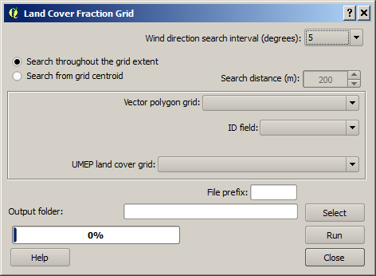
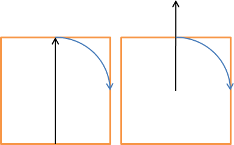

The Land
Cover Fraction (Grid) plugin calculates land cover fractions from a point
location based on a land cover raster grid. The land cover fractions included in
UMEP are:
-
Paved (1)
-
Buildings
(2)
-
Evergreen
trees (3)
-
Deciduous
trees (4)
-
Grass (5)
-
Bare soil
(6)
-
Water (7)
A land
cover grid suitable for the processor in UMEP can be derived using the
Land Cover Classifier. The fraction will vary depending on what angle
(wind direction) you are interested in. Thus, this plugin is able to derive the
land cover fractions for different directions. This plugin is the same as the
Land Cover Fraction (Point) except that this plugin calculates the
fractions for each polygon object in polygon vector layer. The polygons should
preferable be squares or any other regular shape. To create such a grid, built
in functions in QGIS can be used (see
Vector -> Research Tools -> Vector Grid...).
The Land
Cover Fraction (Grid) is located at
UMEP -> Pre-Processor -> Urban Morphology -> Land Cover Fraction (Grid).
When you
run plugin, you will see the dialog shown below. It consists of three sections.
The top section sets the parameters for the area of interest where the fractions
are calculated. You also set the search interval in degrees and from where the
search should take place within each grid. The next section lets you specify the
input data regarding polygon layer and the land cover raster grid that should be
used. The bottom section is for specifying output and for running the
calculations.

Tick this
in if the search should be performed from one side of the grid to the opposite
side. Tick the other option (Search from grid centroid if the search should
start from the centroid of the grid. Setting the
Search distance can then
allow for the search to extent beyond the grid. See the figure below for
illustration. The left one performs a search using the grid extent whereas the
right illustrates a search from the centroid and extending outside of the grid.

This
decides the interval in search directions for which the morphometric parameters
will be calculated.
Here the
grid polygon layer should be specified
Choose an
attribute from the selected polygon layer that will be used to separate the
different polygon objects from each other. An attribute field of unique numbers
or letters should be used.
Tick this in if isotrophic results (see output) should be added as attributs to the polygon grid attribute table.
A integer
raster land cover grid (e.g. geoTIFF) consisting of the various land covers
specified above.
A prefix
that will be included in the beginning of the output files.
A
specified folder where result will be saved.
This
starts the calculations.
This
button closes the plugin.
Two
different files per polygon objects are saved after a successful run. The first
one includes anisotropic result where the land cover fractions for each wind
direction as specified are included. The second one includes isotropic results
where all directions are integrated into one value for each fraction. If the
raster data includes no data values within a polygon object, this grid will not
be considered in the calculation.